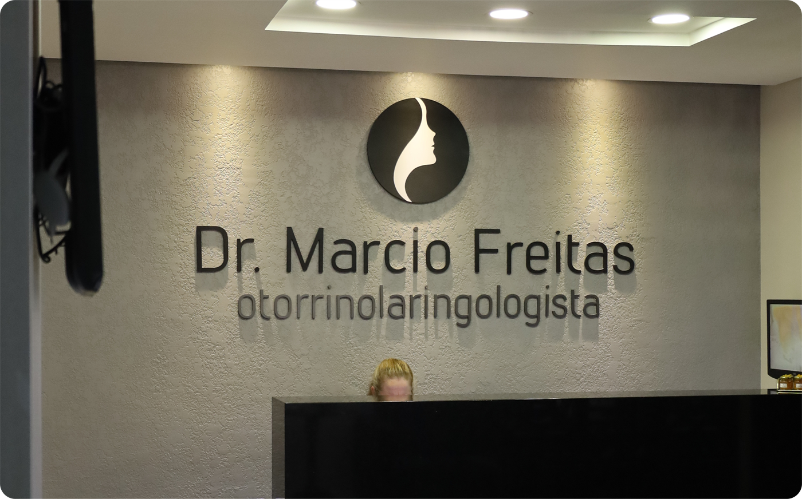
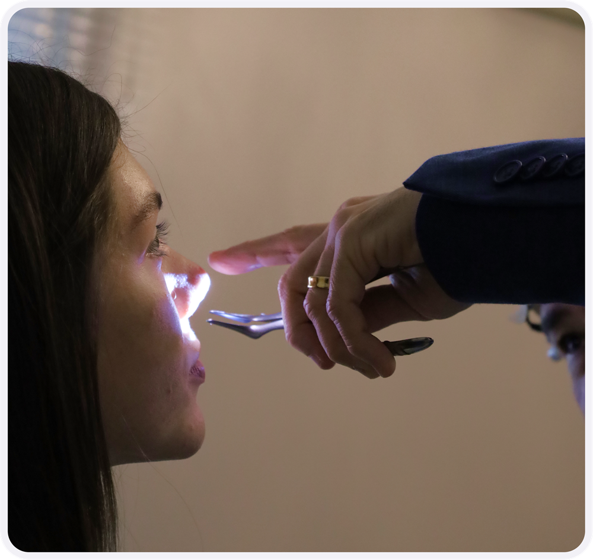

30-60 Min
Mapeamento anatômico da mímica facial, antissepsia rigorosa e aplicação delicada com agulhas ultrafinas ou microcânulas.
Protocolos injetáveis médicos realizados com profundo domínio da anatomia facial para suavizar rugas e estimular colágeno sem exageros.

O receio de ficar com o rosto inchado ou artificial afasta muitos pacientes dos tratamentos estéticos. Quando conduzidos por um cirurgião especialista em anatomia da face, os injetáveis atuam com parcimônia para devolver viço, sustentação e frescor sem transformar você em outra pessoa.
Cada aplicação na clínica é realizada exclusivamente pelo Dr. Márcio Carlos de Freitas após análise individualizada da musculatura, estrutura óssea e qualidade da pele. O foco é o gerenciamento elegante do envelhecimento e a prevenção da flacidez.
Suavização das linhas dinâmicas da testa, glabela e região periorbital preservando a naturalidade do sorriso e a expressividade do olhar.
Estímulo biológico profundo para recuperar a espessura dérmica, a firmeza do contorno facial e a qualidade da pele de forma gradual e duradoura.
Pontos estratégicos de sustentação em planos anatômicos seguros, respeitando os limites naturais do rosto e indicando cirurgia quando necessário.


Parâmetros objetivos e rigor médico aplicados a
cada etapa do seu tratamento.
Mapeamento anatômico da mímica facial, antissepsia rigorosa e aplicação delicada com agulhas ultrafinas ou microcânulas.
Uso de anestésicos tópicos potentes e bloqueios locais estratégicos para uma experiência tranquila no consultório.
Retorno imediato à rotina profissional e social logo após a sessão, sem necessidade de afastamento das atividades.
Aplicação guiada pelo conhecimento cirúrgico profundo de vasos e nervos da face, elevando o nível de segurança.
Utilização exclusiva de produtos originais aprovados pela ANVISA e FDA, com rastreabilidade de lote em prontuário.
Retorno presencial agendado em 15 dias para avaliação fina de simetria e acompanhamento da evolução.
Acompanhamento médico mesmo nos procedimentos minimamente invasivos.
Embora os procedimentos injetáveis permitam retorno imediato à rotina, o acompanhamento pós-aplicação faz parte do padrão de cuidado do Dr. Márcio Freitas. Pequenos pontos de sensibilidade ou discreto inchaço local desaparecem rapidamente.
Você recebe orientações personalizadas para as primeiras horas e conta com retorno presencial para avaliar o resultado no pico de ação do tratamento.
Retorno normal ao trabalho, evitando apenas exercícios físicos intensos, exposição ao calor intenso e massagem não orientada no local.
Início progressivo do relaxamento muscular da toxina botulínica e acomodação natural do ácido hialurônico nos tecidos.
Consulta de revisão presencial com o Dr. Márcio para conferência de simetria e registro fotográfico comparativo.
Pico de produção de novo colágeno nos protocolos com bioestimuladores, evidenciando pele mais firme, luminosa e rejuvenescida.
Cuide da saúde e da harmonia da sua face com critério médico e resultados naturais. Agende uma avaliação presencial com o Dr. Márcio Carlos de Freitas em Jaraguá do Sul.